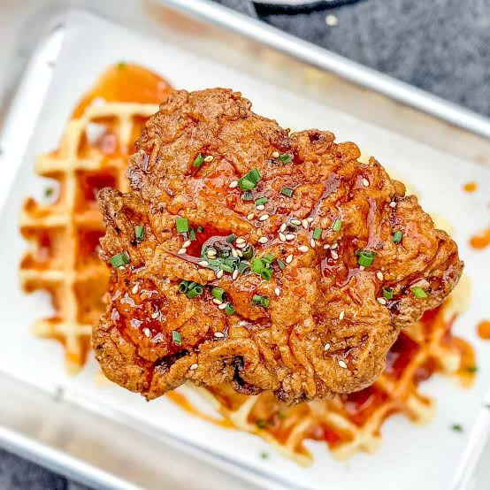

Chicken and Waffles
Chicken and waffles is a classic soul food dish that combines crispy fried chicken with fluffy waffles. It's a perfect combination of savory and sweet flavors.
Ingredients
- 1 lb chicken breast, cut into strips
- 1 cup all-purpose flour
- 1 tsp salt
- 1 tsp black pepper
- 1 cup milk
- 1 egg
- 1 cup waffle mix
- 1 tbsp butter, melted
Instructions
- Preheat the oven to 375°F (190°C).
- In a bowl, mix the flour, salt, and pepper.
- Beat the egg and milk together, then add to the flour mixture.
- Dip the chicken strips in the batter and fry until golden brown.
- Preheat the waffle iron according to the manufacturer's instructions.
- Pour the waffle mix into the waffle iron and cook until golden brown.
- Serve the chicken and waffles together, drizzling with melted butter.